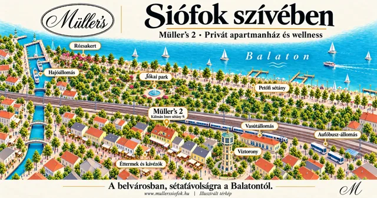

Jakuzzi
Pezsgő víz, meghitt fények. Merülj el a pihenésben, és élvezd a ráérős pillanatokat.

Jakuzzi, finn szauna és sószoba Siófok szívében. Modern, klimatizált szobák, a Víztoronytól 150 méterre.





Jakuzzi, finn szauna és sószoba. Fedezd fel a pihenés tereit, Siófok szívében.
Pezsgő víz, meghitt fények. Merülj el a pihenésben, és élvezd a ráérős pillanatokat.

A fa melege, lágy fények és csend. Egy nyugodt megálló a közös programok között.

Meleg fényű sófalak és pihenőszékek. Itt jólesik leülni, és egy kis időre egyszerűen csak lenni.
A wellness után a kandallós társalgó és a közös terek adnak helyet a hosszú beszélgetéseknek, a nyugodt estéknek.
Nézd meg a közös tereketNégyen érkeztek, vagy nagyobb társasággal? Nézd meg a szobákat és a 6, illetve 8 fős apartmanokat, és írd meg, melyik érdekel.
Világos, tetőtéri szoba ágyakkal és ülősarokkal, legfeljebb 4 vendégnek.
Érdeklődöm a Comfort szobárólLegfeljebb 4 vendégnek, terasszal. A képen az apartman teraszát láthatod.
Érdeklődöm az apartmanrólGalériás apartman tetőtéri hálótérrel és fedett terasszal, legfeljebb 6 vendégnek.


Galériás apartman tetőtéri hálótérrel, étkezősarokkal és teakonyhával, legfeljebb 8 vendégnek.


Erről a szobatípusról is szívesen adunk tájékoztatást.
Kérdezek a Standard szobárólÍrd meg, mikor érkeznétek, és hányan jönnétek. Telefonon vagy e-mailben is elérsz minket.
Müller’s 2 · Siófok, Kálmán Imre sétány 9.Az online foglalás hamarosan elérhető.
Online foglalás